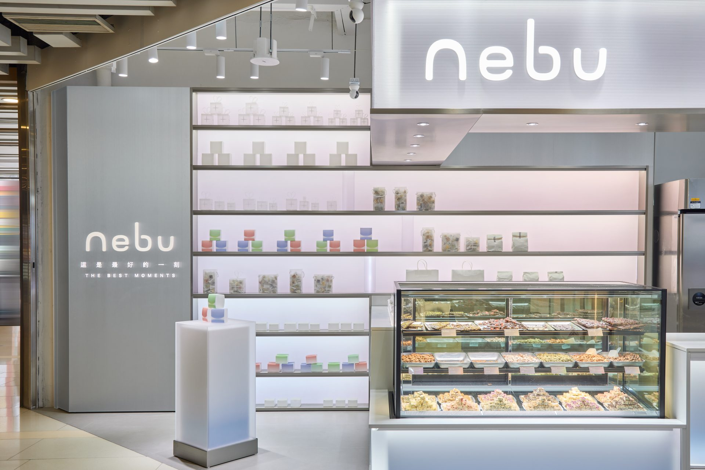

STORY
Space is the most profoundexpression of a brand’s identity
In the commercial realm, every spatial element must serve a strategic purpose, answering one vital question—
Does this environment elevate the brand’s intrinsic value?
True value is not merely observed—it is experienced, remembered, and transformed into enduring trust and commercial success. We do not simply design spaces; we architect immersive, strategic environments that serve as catalysts for long-term brand evolution.
